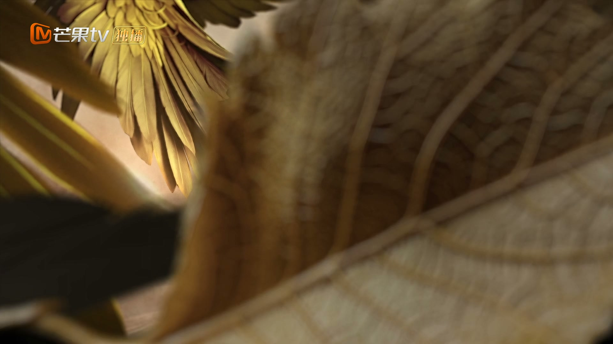
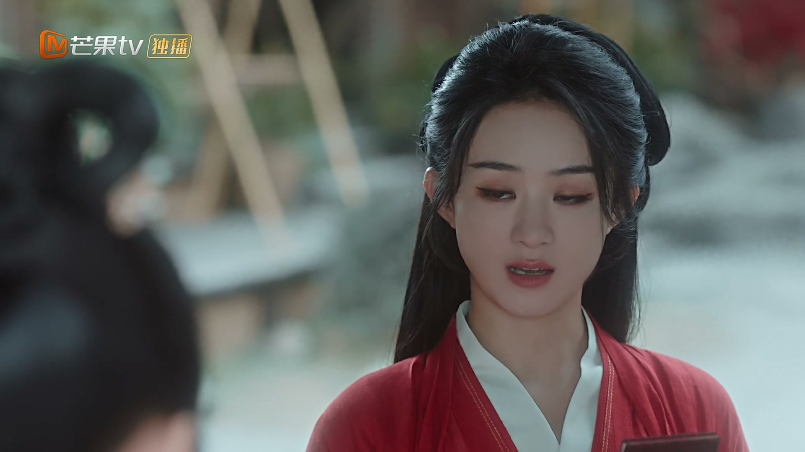
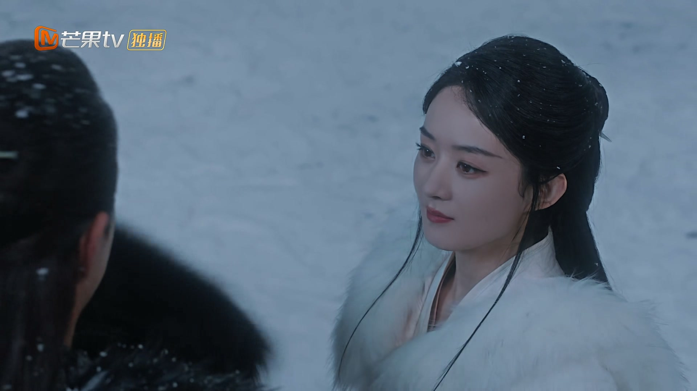
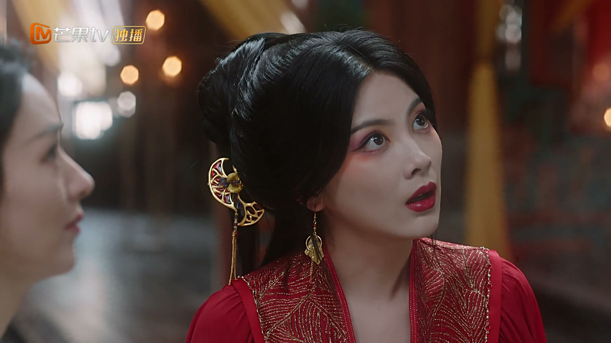
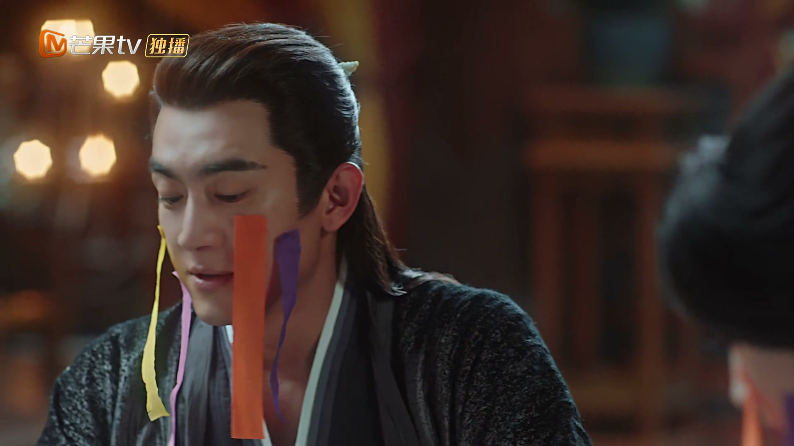
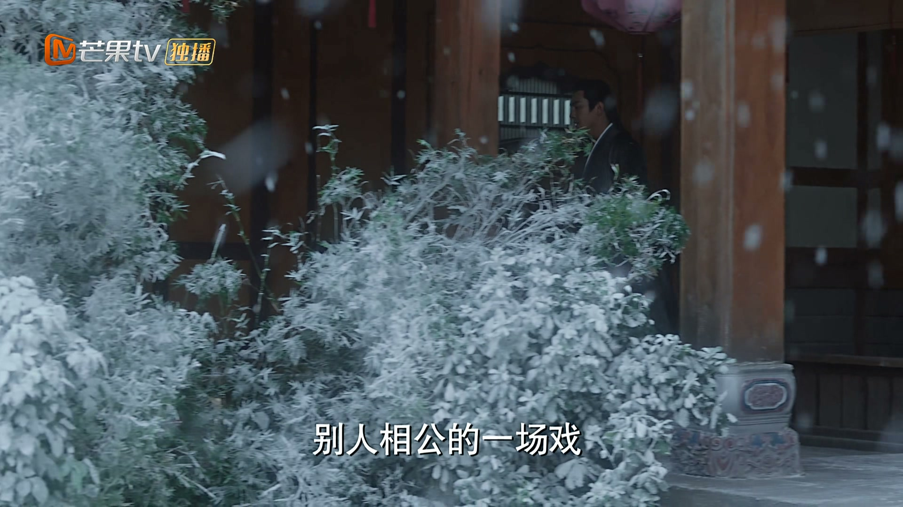
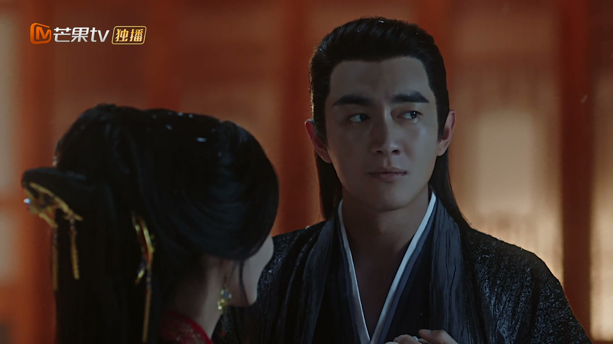
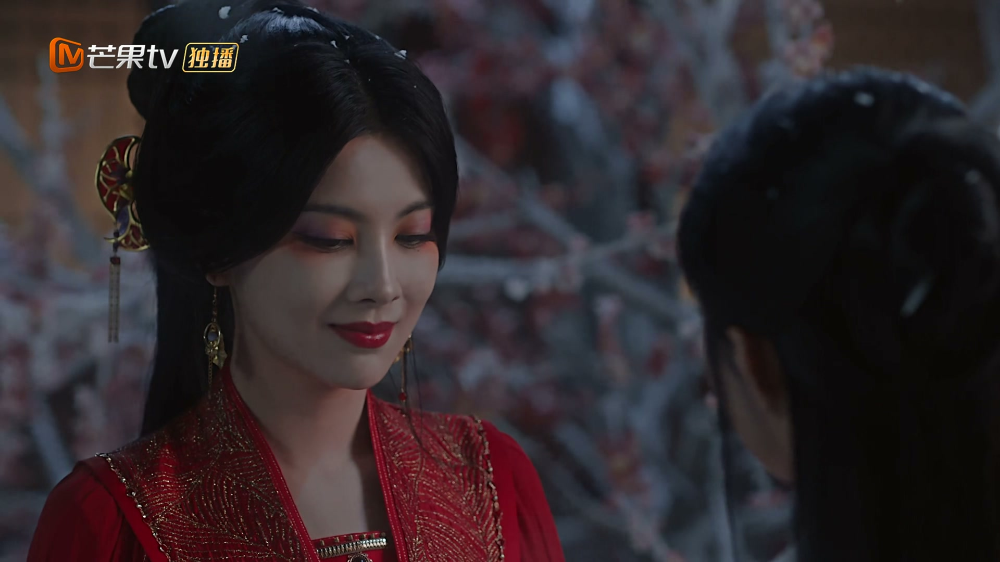
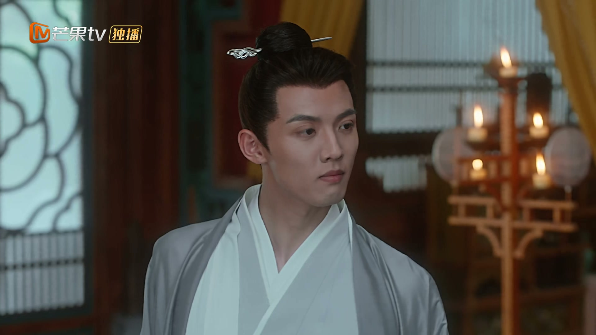
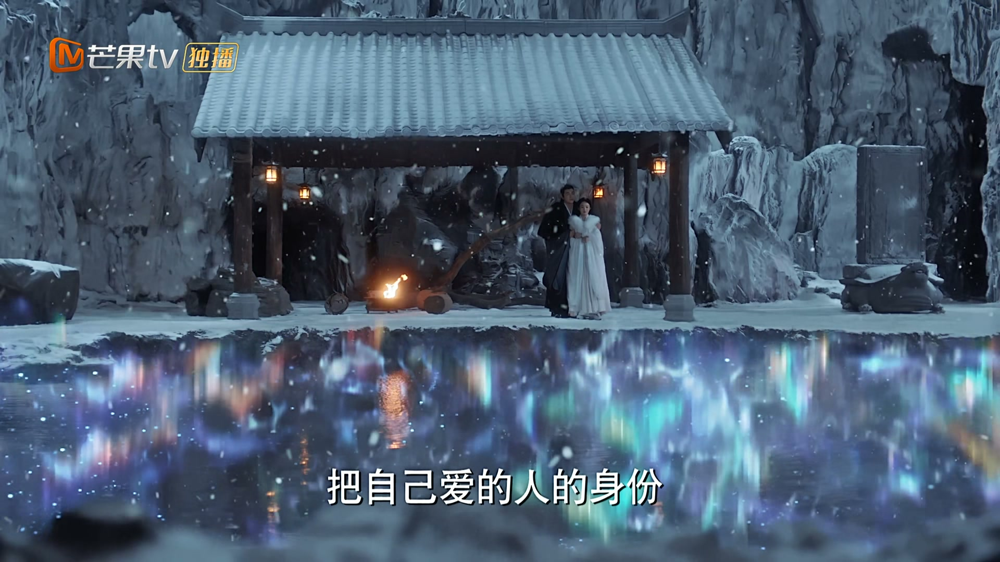

执念与喜欢，别混为一谈
情境：金娘子追了慕子淳十一年，分不清是爱还是不甘，直到收回自己、疏远对方，才看清心里真正放不下的是什么。
遇到这种情况，可以这样做
- 看不清自己的心时，先拉开距离看看。
- 付出太多的人，往往把执念误当成深情。
- 放下执念，才能看清真正的答案。

Drama Recap · 剧情图文总结
第 39 集 · 有凤来仪
金娘子遣侍女送来喜帖，邀沈璃行止赴极北雪山观礼。神力尽失的行止畏寒，沈璃一路照料。金娘子追了十一年的人始终木头一块，行止沈璃设下赌局，以「收回自己」逼他现形。一场假意负心、假杀新娘的连环计后，金娘子终于等到真心。而沈璃与行止的姻缘，也在这一集迎来圆满。
大结局，一切得偿所愿。金娘子的喜帖把沈璃和行止请到极北雪山，一场「收回自己」的赌局，让追了十一年的金娘子看清自己的心，也让木头似的慕子淳说出那句「我爱的女人，我容不得她受半点伤害」。金娘子大婚，把上骨玉佩作回礼。而沈璃与行止，也终于等来了那一句「嫁给我」。
行云小院里，沈璃与行止拌嘴，一句「你阴我阳，阴阳相和」，默契如昨。金娘子的侍女送来喜帖，请王爷与神君赴极北雪山参加婚礼，点名要天外天的星辰作贺礼。行止想拿块石头糊弄，被沈璃骂没良心。
剧里的鸡毛蒜皮，往往是人生的缩影。这些情节不只是故事——当你在现实中遇到同样的处境时，它们能提醒你：先做什么、别做什么、怎么说才有效。
情境：金娘子追了慕子淳十一年，分不清是爱还是不甘，直到收回自己、疏远对方，才看清心里真正放不下的是什么。
情境：金娘子依计疏远慕子淳，才第一天就茶饭不思——原来放不下的，是她自己。
情境：慕子淳木头了十一年，直到沈璃要「抢走」金娘子，才憋出那句「我爱的女人，我容不得她受半点伤害」。
情境：行止用「收回自己」激将，沈璃用「假杀新娘」逼真，一场连环计让两个别扭的人终于坦诚相见。
情境：行止一句「我与你办一场十万天神同庆的婚礼」，把拖了整部剧的姻缘，定格在了最圆满的一刻。
情境：金娘子点名要天外天的星辰作贺礼，行止却想拿石头糊弄，被沈璃当场骂「没良心」。
行云小院里，行止与沈璃拌嘴，沈璃一句「你阴我阳，阴阳相和」，两人相视而笑，默契如昨。
没有了神明的枷锁，也没有了战乱的阴霾，他们的日子又回到了最初的模样。
关键台词 · KEY QUOTES

金娘子的侍女送来喜帖，请王爷与神君赴极北雪山参加婚礼，点名要天外天的星辰作贺礼。
行止一听就要打退堂鼓，说给她捡块石头送去不就得了。沈璃瞪他：你这个没良心的！
侍女走后，行止还在盘算怎么糊弄，沈璃已经收拾好了行囊。
关键台词 · KEY QUOTES
去往极北雪山的路上，行止神力尽失、畏寒怕冷，缩着脖子直喊冷。沈璃嘴上嫌弃，却把披风解下来给他。
行止得寸进尺，讨要「殷勤」，沈璃作势要打，两人一路斗嘴，一路相依。
关键台词 · KEY QUOTES

金娘子在府门前迎接沈璃与行止，一见面就要和行止做买卖，还把自己的「相公」慕子淳藏得严严实实。
沈璃看破不说破，只问行止：你怎么知道那个男人喜欢金娘子？行止笑道：我不知道他喜欢谁，跟我有什么关系？让他去纠缠那个男的，总好过让他来烦着你。
金娘子给慕子淳上药，一口一个「相公」，慕子淳却木头似的，答也不是，不答也不是。
关键台词 · KEY QUOTES

夜里，金娘子忆起往事：当年她救下重伤的慕子淳，从此动了凡心，追了他整整十一年，他却始终像块木头。
沈璃点破：或许那根本不是喜欢，只是一份执念——人最放不下的，往往是自己付出太多的那一个。
关键台词 · KEY QUOTES

慕子淳是从凡人一路修上来的仙人，性子又木又犟，从不解风情。当年金娘子以救他满门为由逼他成亲，他答应了，却从不回应她的心意。
行止给金娘子出了个主意：他当年给了你什么，你现在就把他给你的，全部都拿回来。
金娘子半信半疑，行止笑得意味深长：我保证，他迟早会想明白自己到底要什么。
关键台词 · KEY QUOTES

金娘子依计行事，疏远慕子淳，把他赶到偏院，不再嘘寒问暖。
可才第一天，她就自己茶饭不思，翻来覆去睡不着。她这才明白，有些习惯，早就戒不掉了。
关键台词 · KEY QUOTES

沈璃故意当着慕子淳的面放话：我要把金娘子抢走。
木头一样的慕子淳终于忍不住，一字一句道：「我爱的女人，我容不得她受半点伤害。」
沈璃满意而归——这根木头，果然不是无动于衷。
关键台词 · KEY QUOTES

金娘子与行止打赌：婚礼之前，让慕子淳亲口投降，承认在意她。
赌注，是金娘子身上那块视若珍宝的上骨玉佩。金娘子自信满满：他要是先开口，这块玉佩就是你们的。
关键台词 · KEY QUOTES

行止依计行事，假意贪恋金娘子的家产，又四处拈花惹草，把金娘子刺激得彻底心凉。
「选择一个不可能的人吗？这不是奴家对你做过的事吗？」金娘子对着慕子淳苦笑，终于说出口——我放你走，你回你的仙门，不必再被我这个妖女纠缠了。
赌局胜负难料，行止却胸有成竹：娘子对那木头的情根，恐怕比她以为的还要深。
关键台词 · KEY QUOTES
眼看金娘子真要放走慕子淳，沈璃急得直跺脚。行止却老神在在：王爷觉得，我会让事情发展成那样吗？
沈璃依计，假意「杀了」金娘子。慕子淳闻讯赶来，疯了一般冲进喜堂，拼死相救，把金娘子护在身后。
金娘子这才明白，一切都是沈璃设的局。可当她看着慕子淳惊惶的脸，心里那点气，早被十一年来第一次看见的真心冲得干干净净。
关键台词 · KEY QUOTES

金娘子大婚，把上骨玉佩作回礼赠予沈璃。礼成之日，她终于嫁给了那个让她追了十一年的木头。
回去的路上，沈璃提起：我们好像还没有办过婚礼。行止停下脚步，郑重道：那我与你办一场，十万天神同庆的婚礼，你可愿意？
沈璃低头不语，行止仔细一看，又惊又喜——她已有孕。行止连声道：那得赶紧办，等肚子大起来，穿礼服就不好看了！
葡萄架下，他轻轻唤她「碧苍王」，她笑着应他。这一生，终于再无遗憾。
关键台词 · KEY QUOTES
与行止赴极北雪山观礼，设「假杀新娘」之计逼出慕子淳真心；结局答应行止的求婚，已有身孕，终与所爱相守。
神力尽失仍不改从容，设「收回自己」之局助金娘子看清真心；结局郑重求婚，要办一场十万天神同庆的婚礼。
追了慕子淳十一年的妖界女子，表面风风火火，实则痴心一片；结局大婚，把上骨玉佩作回礼赠予沈璃。
木头一块的修仙者，被金娘子追了十一年，终于在沈璃的激将下喊出「我爱的女人，我容不得她受半点伤害」。
奉金娘子之命送喜帖、传话，是这场雪山婚礼的见证者之一。
行止与金娘子打赌，赌注是金娘子视若珍宝的上骨玉佩——一场赌局，赌出了两个人的真心。
木头了十一年的慕子淳，终于在沈璃的激将下喊出「我爱的女人，我容不得她受半点伤害」。
沈璃将计就计「杀了」金娘子，逼得慕子淳拼死来救，一场闹剧成就一段姻缘。
追了十一年的妖界女子，终于嫁给了那根木头，把上骨玉佩作回礼赠予沈璃。
「我与你办一场十万天神同庆的婚礼，你可愿意？」行止求婚，沈璃低头不语——她已有孕，全剧在此圆满收束。
沈璃曾说第二个愿望要花很久很久的时间去完成——大结局的婚礼与余生，便是它的答案。
金娘子把上骨玉佩作回礼赠予沈璃，这份「姻缘信物」见证了妖与人的姻缘，也映照沈璃与行止的结局。
沈璃已怀有身孕，碧苍王的血脉将延续，那个「每个夏天摘葡萄」的人，会带着孩子在葡萄架下长大。
行止神格虽失，誓言不减——哪怕再无神明之威，也要给她一场天大的婚礼。
从此不问三界事，只守行云小院一方天地——沈璃与行止的故事，以最平凡也最幸福的方式落幕。